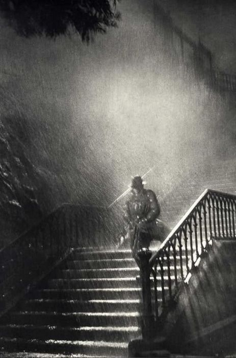

Journal Entry: September 7th, 1933. 11:23 PM -Somewhere outside of Boston
I tracked Martha Witt to a seedy looking mansion outside of town. She was my only lead for the missing 13 children reported last week, and I got a tip she was seen in the neighborhood. Not a whole lot to go on, but when I saw the house, I knew exactly what I was looking at. Tactfully entering the house, I discovered a god-damned horror show.
Martha lay dead on an Altar in the middle of an ancient looking library, but no sign of the kids. Cultist lay everywhere, black singed holes where their eyes had been. I noticed the priest clutching an ancient looking tome with some sort of codex lock on it. If I can get it open, it might give me some clues as to what they're planning next.